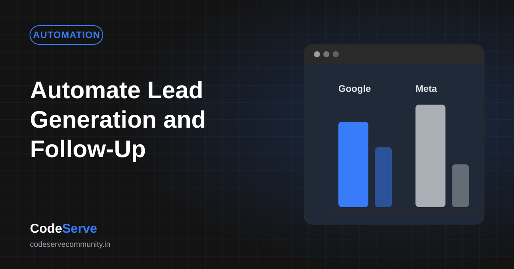

How can a small business automate lead generation?
Automate lead generation in five steps: capture every enquiry from your website, ads, WhatsApp and Google Business Profile into one place such as a Google Sheet or CRM; send an instant acknowledgement to the customer; alert the right salesperson on WhatsApp; schedule follow-up reminders and messages for leads that don't respond; and report weekly on lead sources and conversions. Tools like n8n, Make or Zapier connect these steps without custom software.
Where leads usually get lost
- Website form emails land in a folder nobody checks.
- Instagram DMs, WhatsApp chats and calls are spread across different phones.
- The first reply comes hours later — after the customer has contacted others.
- Nobody follows up after the first quote.
- No one knows which source — Google, ads or Instagram — brings paying customers.
Automation fixes the process, not the conversation: the system makes sure every lead is recorded, acknowledged and followed up, so your team can spend its time talking to customers.
The automated lead flow
A simple, effective lead automation looks like this:
- Lead arrives from a website form, Meta lead ad, Google Ads form, WhatsApp or Google Business Profile.
- Saved automatically to a Google Sheet or CRM with source, time and details.
- Customer gets an instant reply on WhatsApp or email confirming you received the enquiry.
- Salesperson gets an alert on WhatsApp with the lead details and a one-tap call link.
- Follow-up reminders fire if the lead isn't updated within a set time.
- Weekly report shows leads by source and how many converted.
Step 1: Capture every lead in one place
Pick one "source of truth". For many small businesses a Google Sheet is enough at the start; growing teams usually move to a CRM such as Zoho, HubSpot or a custom one. Then connect each source:
- Website forms: send submissions to the sheet or CRM via a webhook instead of only email.
- Meta and Google lead ads: use the platform integrations or an automation tool to pull leads in automatically.
- WhatsApp: with the WhatsApp Business API, new conversations can create a lead record.
- Calls: log calls in the CRM; some phone systems can do this automatically.
Record the source for every lead — add UTM parameters to ad and Instagram links so your website form can capture them.
Step 2: Reply instantly
An automatic acknowledgement reassures the customer and sets expectations. Example WhatsApp message:
Hi {{name}}, thanks for contacting Sunrise Interiors!
We've received your enquiry for {{service}}.
Our designer will call you within 30 minutes during
working hours (10am–7pm). Reply here if you'd like
to share photos of your space.On WhatsApp, the first business-initiated message must use an approved template. An AI chatbot can go further and answer basic questions while the customer waits.
Step 3: Alert and assign
Send the lead to the right person immediately — by service, location or round-robin among salespeople — as a WhatsApp message with name, requirement, source and a click-to-call link. Speed matters: the first business to respond often wins the customer.
Step 4: Automate follow-ups
Follow-ups are where most revenue is lost. Simple rules work well:
| Trigger | Automated action |
|---|---|
| Lead status still "New" after 30 minutes | Remind the salesperson; alert the manager after 2 hours |
| Quote sent, no reply in 2 days | Send a polite follow-up template with an offer to answer questions |
| Customer said "call next week" | Create a reminder on the chosen date |
| Lead marked "Lost" | Ask for the reason (price, timing, chose competitor) for reporting |
| Customer converted | Send a thank-you and, after the job, a Google review request |
Keep follow-ups helpful, few in number, and respect opt-outs. Marketing messages on WhatsApp need the customer's opt-in.
Step 5: Measure lead sources
A weekly automated summary — leads by source, response time, conversions and revenue — tells you where to spend your marketing budget. Pair it with GA4 conversion tracking on your website. If Google brings fewer but better leads than Instagram, you will see it in the numbers.
Example: a coaching centre workflow
Consider a coaching centre in Kukatpally running admission ads:
- A parent fills a Meta lead form or the website enquiry form.
- The lead is added to a Google Sheet with course, class and source.
- The parent instantly receives a WhatsApp message with batch timings, fees PDF and a demo-class booking link.
- The counsellor for that course gets a WhatsApp alert.
- If no demo is booked in 24 hours, a reminder goes to the counsellor; after 3 days, a follow-up template goes to the parent.
- Every Monday the owner receives a summary: leads per course and source, demos booked, admissions.
This is an illustrative workflow, built from tools most small businesses already use.
Which tools to use
- n8n, Make or Zapier to connect forms, sheets, CRMs and WhatsApp — compared in n8n vs Zapier vs Make.
- Google Sheets or a CRM as the lead database.
- WhatsApp Business API for automated templates and alerts — see the WhatsApp Business API guide.
- GA4 for website conversion tracking.
- AI (optional) to summarise enquiries, classify leads or draft replies — more ideas in 10 AI automations for small businesses.
Mistakes to avoid
- Automating messages that sound robotic or arrive too often.
- Sending WhatsApp marketing messages without opt-in.
- Not recording lead source, which makes reporting impossible.
- Building complex automation before the basic process is clear.
- No one owning the system — someone must check that automations still run.
Frequently asked questions
Do I need a CRM to automate leads?
Not at first. A Google Sheet connected to your forms and WhatsApp alerts works well for small volumes. Move to a CRM when you have several salespeople or need pipelines, permissions and detailed reports.
Can WhatsApp follow-ups be automated?
Yes, using the official WhatsApp Business API with approved message templates. Marketing messages require the customer's opt-in, and follow-ups should be limited and useful.
Which is the best tool for lead automation?
n8n, Make and Zapier can all do it. Zapier is simplest, Make is flexible and cost-effective, and n8n can be self-hosted for more control. The best choice depends on volume, budget and technical comfort.
How quickly should I reply to a new lead?
As fast as possible. An instant automated acknowledgement plus a human call within minutes during working hours gives the best chance of winning the customer.
Can automation work with Instagram and Facebook leads?
Yes. Meta lead ads can send leads directly to sheets or CRMs through integrations, and Instagram messages can be routed with the right tools and permissions.
About the author
CodeServe Team — the web development and automation team at CodeServe Community in KPHB, Kukatpally, Hyderabad. We build websites, AI chatbots, automation and business software, and write these guides from the questions clients ask us. Related service: learn how we can help.